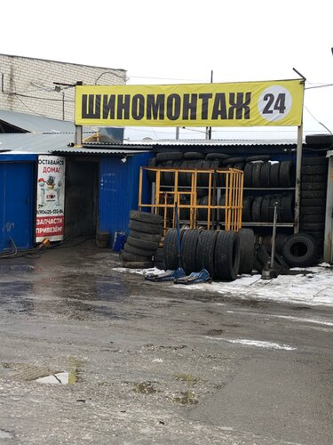
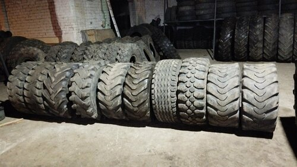
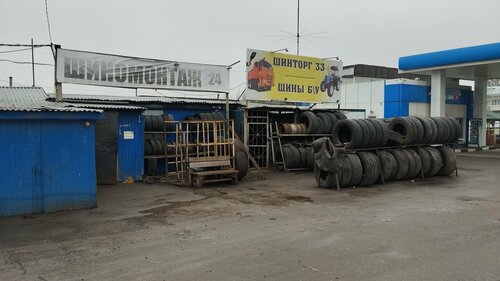
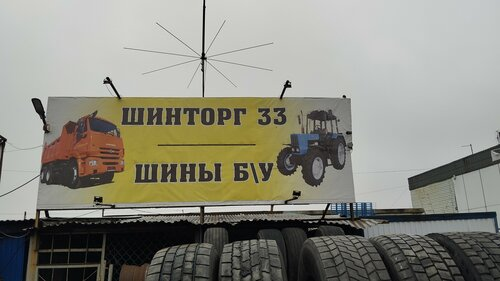
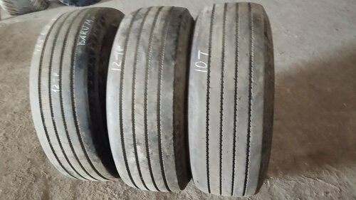
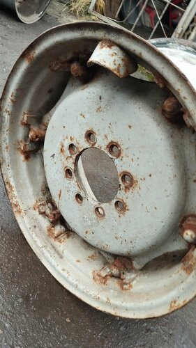

Лакинск, ул. Мира, 90А
Шины, диски и шиномонтаж без лишних поездок по городу
Позвоните в Шинторг33, чтобы уточнить размер, наличие шин, возможность монтажа и удобное время приезда.


Фото
22
в публичной карточке места
Шины и диски
Шиномонтаж
Грузовой шиномонтаж
Балансировка
Вулканизация
Оплата картой
Б/у шины
Фото и видео состояния
Сначала услуги
Что можно уточнить по телефону до приезда
Второй блок сразу показывает услуги Шинторг33: что решает каждая услуга, для кого она и в каких ситуациях стоит звонить.
Подбор и продажа шин и дисков
- Что за услуга
- Помогает быстро понять, есть ли подходящий размер, рисунок и состояние комплекта под вашу задачу.
- Для кого
- Для водителей легковых авто, грузовиков, коммерческого транспорта и спецтехники.
- Когда звонить
- Когда нужна замена комплекта, редкий размер, б/у шины или нужно сравнить несколько вариантов до поездки.
- Почему здесь
- В отзывах клиенты отмечают подбор по фото и видео, большой выбор б/у шин и работу с грузовыми, тракторными и спецшинами.
Шиномонтаж легковых автомобилей
- Что за услуга
- Снятие, установка, монтаж покрышки и проверка колеса после работ.
- Для кого
- Для сезонной переобувки, замены повреждённой шины или срочного визита по дороге.
- Когда звонить
- Если колесо спускает, нужно поставить купленную шину, заменить камеру или подготовить авто к сезону.
- Почему здесь
- Шиномонтаж указан в карточке Яндекс Карт, а в отзывах клиенты отдельно пишут про оперативную установку и помощь на дороге.

22 фото
В карточке видны вывеска, территория и шины
Грузовой шиномонтаж
- Что за услуга
- Работы с колёсами грузового транспорта, где важны размер, нагрузка и состояние резины.
- Для кого
- Для водителей фур, КамАЗов, Газелей, коммерческого транспорта и техники, которая не может долго простаивать.
- Когда звонить
- Когда нужно срочно заменить колесо, подобрать грузовую шину или решить вопрос перед рейсом.
- Почему здесь
- Грузовой шиномонтаж указан в особенностях карточки, а отзывы подтверждают обращения по грузовым и тракторным шинам.
Балансировка при биении и вибрации
- Что за услуга
- Проверка и балансировка колеса, чтобы убрать биение руля, вибрацию и неравномерную нагрузку на подвеску.
- Для кого
- Для водителей, которые чувствуют вибрацию после скорости, переобувки или ремонта колеса.
- Когда звонить
- Если машину трясёт, руль бьёт, после установки резины появились неприятные ощущения.
- Почему здесь
- Балансировка указана в карточке, а один из отзывов описывает решение проблемы биения после нескольких неудачных обращений в другие сервисы.
Вулканизация и ремонт повреждений
- Что за услуга
- Ремонт проколов, повреждений и восстановление колеса там, где это технически возможно.
- Для кого
- Для тех, кто не хочет сразу покупать новую шину, пока есть шанс безопасно восстановить рабочее колесо.
- Когда звонить
- Если появился прокол, повреждение, спускает колесо или нужна оценка пригодности шины.
- Почему здесь
- Вулканизация указана в особенностях Яндекс Карт. В отзывах есть обращения по ремонту шин и установке.
Фото, видео и отправка шин
- Что за услуга
- Удалённое согласование состояния шин перед покупкой и отправкой, когда клиент находится не рядом с Лакинском.
- Для кого
- Для покупателей из других городов, которым важно увидеть состояние шин до оплаты и доставки.
- Когда звонить
- Если нашли вариант через объявление или ищете редкий размер и хотите заранее проверить состояние.
- Почему здесь
- В нескольких отзывах клиенты описывают получение фото/видео, отправку транспортной компанией или попуткой.

Шинторг33 ул. Мира, 90А, Лакинскна основе 98 оценок в карточке организации
есть свежие отзывы за 2025 год и более ранние обращения
видны вывеска, зона шиномонтажа, шины и рабочие детали
оплата картой, вулканизация, грузовой шиномонтаж, балансировка
Факты из карточки
Перед звонком можно проверить рейтинг, отзывы, фото и особенности места
Рейтинг и оценки
В карточке Яндекс Карт указаны рейтинг 4,4 и 98 оценок.
4,4
98 оценок
Особенности места
В карточке отмечены оплата картой, вулканизация, грузовой шиномонтаж и балансировка.
КартаБалансировкаВулканизация
Фото и видео состояния
В отзывах клиенты отмечают, что получали фото и видео шин перед покупкой или отправкой.

Покупка и отправка
Отзывы описывают покупку грузовых, тракторных и б/у шин, а также отправку транспортной компанией или попуткой.
Лакинск
Фото
Отправка
Как проходит обращение
Звонок помогает сразу перейти к делу: размер, наличие, приезд или отправка
-
1
Называете задачу
Размер шин, тип транспорта, что случилось с колесом и насколько срочно нужно решить вопрос.
-
2
Уточняете наличие и работы
Можно сразу спросить про монтаж, балансировку, вулканизацию, грузовые колёса или нужный комплект.
-
3
Согласовываете следующий шаг
Приехать на ул. Мира, 90А, попросить фото/видео состояния шин или обсудить отправку.
-
4
Решаете вопрос с колесом
Покупка, монтаж, балансировка или ремонт выполняются по ситуации, без лишней переписки на сайте.
Отзывы клиентов
Что люди чаще отмечают?
Ниже не дословные цитаты, а краткий пересказ реальных отзывов из карточки. Полные тексты лучше смотреть на Яндекс Картах.
Смотреть все отзывы
Алексей У.
май 2025
Клиент нашёл шины через объявление, получил варианты, фото и видео состояния, затем согласовал отправку.
kolobdi
май 2025
Покупатель грузовых шин описал ситуацию с повреждением и отметил, что вопрос решили заменой шины.
Артур Александрович
май 2025
В отзыве про тракторные шины клиент отметил показ состояния, ремонт одной шины и сборку на месте.
Павел Захаров
апрель 2024
Клиент обращался из-за биения колёс и отметил, что после балансировки проблема ушла.
Анастасия А.
февраль 2023
Клиентке помогли с камерой для Peugeot 307, оперативно установили и провели оплату через кассу.
Фото места
Реальные фото из публичной карточки Шинторг33
Фото показывают вывеску, территорию, шины и рабочие детали. Для финального запуска их можно заменить на согласованные фото владельца.

Стоимость без выдуманных цен
Прайс не указан в карточке, поэтому цену корректнее уточнять по телефону
Стоимость зависит от размера колеса, типа транспорта, состояния шины или диска, необходимости балансировки, вулканизации и других работ. На сайте не указаны фиктивные цены, чтобы не вводить клиента в заблуждение.
Что сказать при звонке
- Размер шин или модель автомобиля
- Легковая, грузовая машина или спецтехника
- Нужна покупка, монтаж, балансировка или ремонт
- Есть ли срочность и когда удобно приехать
Вопросы перед звонком
Короткие ответы на то, что обычно уточняют перед шиномонтажом
Да. Главный сценарий сайта как раз звонок: назовите размер, тип транспорта и задачу, чтобы быстрее понять, есть ли подходящий вариант.
Да, грузовой шиномонтаж указан в особенностях карточки Яндекс Карт. Перед приездом лучше позвонить и уточнить размер колеса и текущую загрузку.
В отзывах клиенты часто упоминают покупку б/у шин и подбор по фото. Наличие конкретного размера нужно уточнять по телефону.
В отзывах клиенты отмечали, что получали фото и видео перед покупкой. При звонке сразу попросите показать нужный комплект, если выбираете удалённо.
Прайс в карточке не указан. Стоимость зависит от размера колеса, типа транспорта и характера работ, поэтому её корректнее уточнять по телефону.
Адрес: ул. Мира, 90А, Лакинск. На сайте есть кнопка маршрута в Яндекс Картах и карта в блоке контактов.
Контакты
Позвоните в Шинторг33 и уточните, когда подъехать на ул. Мира, 90А
ежедневно 09:00–19:30. Адрес: ул. Мира, 90А, Лакинск.